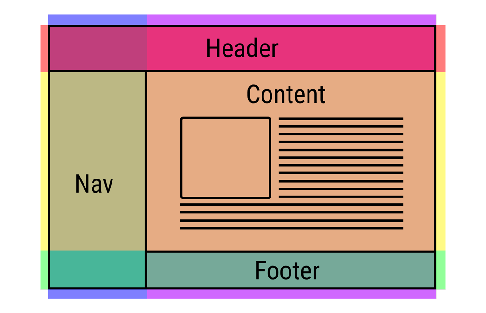

CSS의 기본 구조
CSS의 기본적인 구조는 선택자, 속성, 값, 단위로 이루어져 있고 중괄호로 시작 끝을 지정하고, 콜론으로 값 지정, 세미콜론으로 한 속성의 끝을 정의할 수 있습니다.
선택자 지정
제일 먼저 선택자를 지정해야 합니다. html 문서의 어느 부분에 디자인을 적용할 지 명시해 주는 것이 바로 선택자의 역할입니다.
'*' 선택자는 html내의 모든 태그를 지정합니다.
'element' 선택자는 특정 태그를 지정합니다. '.element' 선택자는 특정 클래스를 지정합니다.
'#element' 선택자는 특정 아이디를 지정합니다.
여기에 그치지 않고'#id.class tag(element)' 이런식으로 특정 아이디 내의 특정 클래스 내의 특정 태그를 정확하게 지정할 수도 있습니다.
스타일 어트리뷰트
이제 선택을 했으니 속성들을 알아볼 차례인데, CSS에서 자주 쓰이는 속성에는 Margin, border, padding 등이 있습니다.
왜냐하면, 박스형 디자인을 구성하기 위한 기초 속성이기 때문입니다.
박스형 디자인은 아래처럼 바깥에서부터 마진, 보더, 패딩, 콘텐츠로 이루어져 있는데 하나하나를 미세하게 설정하여 원하는대로 박스를 디자인할 수 있습니다.
예시로 보자면 이런 박스는,
이런식의 스타일 코드를 정의하여 만들 수 있습니다.
box_1_stylesheet.css
box {
margin: 16px;
border: 8px;
padding: 16px;
content: font, style, size;
}
박스형 디자인을 응용하면 이런 기초적인 레이아웃 구성도 가능해집니다.
See the Pen boxmodel1 by 신병근 (@teto0712) on CodePen.
그리드 레이아웃
그리고 이런 박스형 레이아웃들을 모아, 아래 사진과 같은 현대 사이트에서 가장 많이 사용되는 그리드 레이아웃을 구현할 수 있습니다.
이 페이지도 내비게이션 구조의 그리드 디자인으로 이루어져있습니다.
반응형 웹 디자인
반응형 웹 디자인은 어려운 것이라고 생각할 수 있지만, CSS로 단순하게 구현할 수 있습니다.
CSS의 미디어쿼리라는 기능을 이용하면 일반 고정적인 레이아웃부터, 화면의 크기에 따라 웹페이지를 유동적으로 바뀌는 반응형 웹 디자인도 설계할 수 있습니다.
미디어 쿼리는 @midia{조건} 으로 선언하고 조건 안에 특정 웹페이지 크기를 넣어 작동되게 할 수 있습니다.
저희 웹페이지는 800px을 기준으로 그리드 디자인이 상,하로 바뀌게 설정해놓았습니다.
reponsive_webpage.css
@media (max-width:800px) {
#title {
font-size:1.5em;
}
#grid {
display:block;
}
#grid .nav {
border-right:none;
border-bottom:1px solid #CCC;
}
#grid .article{
width:500px;
}
}